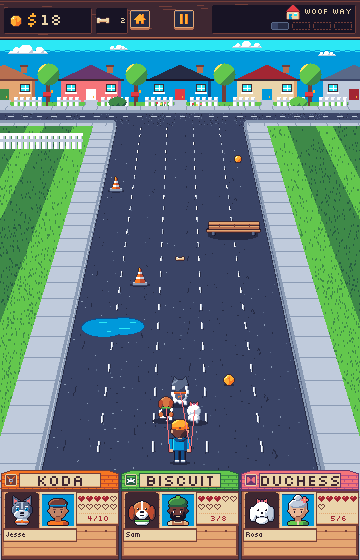
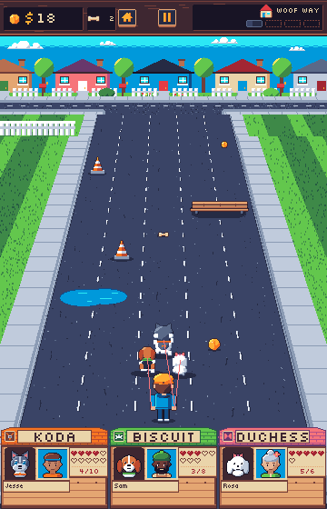
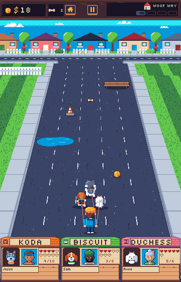

Sprite scale
One Woof Way frame at today's scale beside 40px sprites on 64px lanes, then the bigger scale with 3.5 s of road in view instead of 5.25 s. The top bar, backdrop and doghouses are today's; the big dogs, walker, cone, pickups, bench and puddle are redrawn at their size from the same drawing code, not upscaled.
Each object is the same distance ahead in every frame (tip 90 px, puddle 160, cone 250, treat 300, bench 360, cone 480, tip 580), so at 120 px/s it is the same number of seconds away. With 3.5 s the far edge is 420 px ahead: the last two are out of view and the rest sit further up the road. Today's backdrop is drawn for a 280px road, so the wider road covers its curbs in the rows just above the far edge.
1x



2x
Numbers
The game's camera puts the road's far edge on row 150 at scale 0.5 and the walker's feet on row 464, so horizonY = 2 × 150 − 464 = −164 at any look-ahead and focal = visible distance = seconds × 120 px/s. A point d px ahead draws at scale focal / (focal + d), on row horizonY + 628 × scale.
| Frame | Dog, person, pickup | Lanes, road at the pack | Bench, puddle (2 lanes) | In view | horizonY | footY | farY | focal | ratio |
|---|---|---|---|---|---|---|---|---|---|
| Today | 32, 32×48, 16 | 5 × 56, x 40 to 320 | 88×24, 88×32 | 5.25 s, 630 px | −164 | 464 | 150 | 630 | 0.9968 |
| 40px | 40, 40×60, 20 | 5 × 64, x 20 to 340 | 104×24, 104×32 | 5.25 s, 630 px | −164 | 464 | 150 | 630 | 0.9968 |
| 40px, 3.5 s | 40, 40×60, 20 | 5 × 64, x 20 to 340 | 104×24, 104×32 | 3.5 s, 420 px | −164 | 464 | 150 | 420 | 1.4952 |